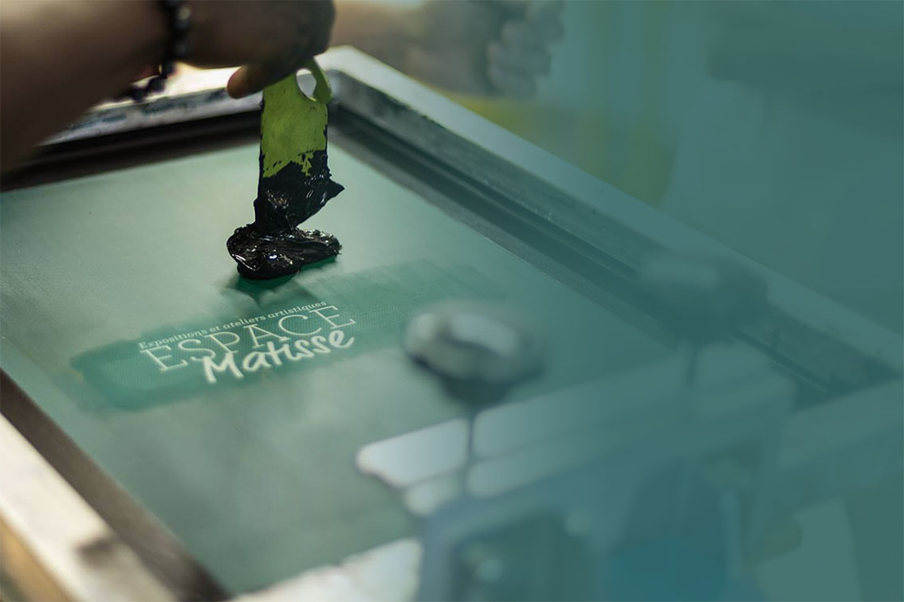
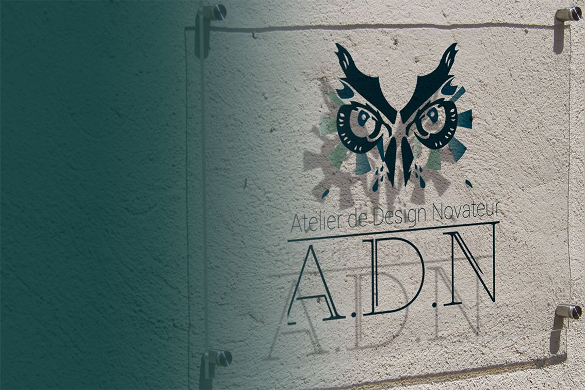
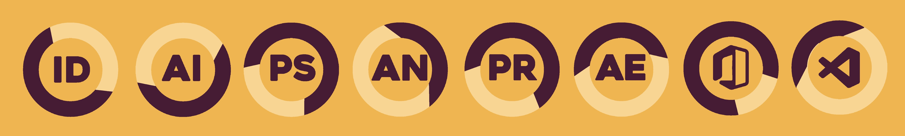
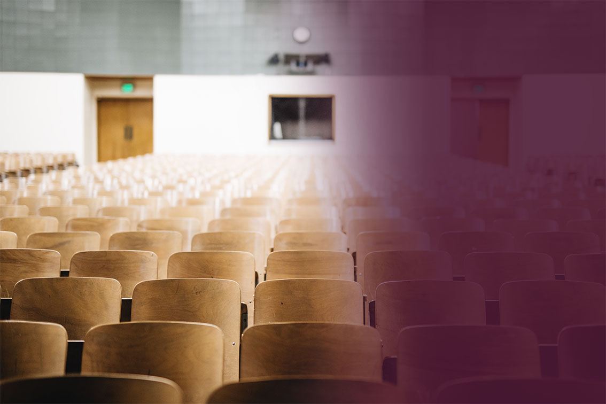
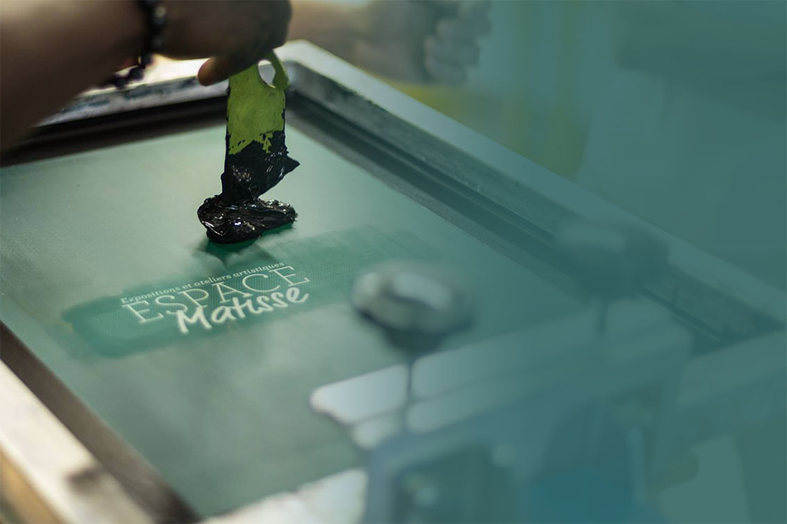
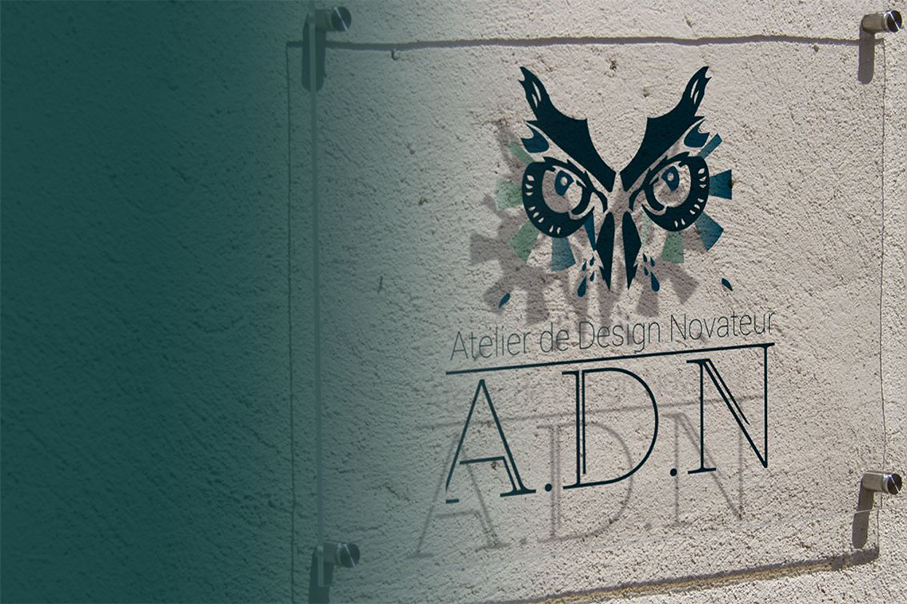
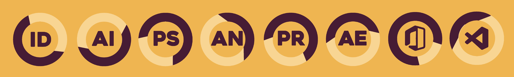
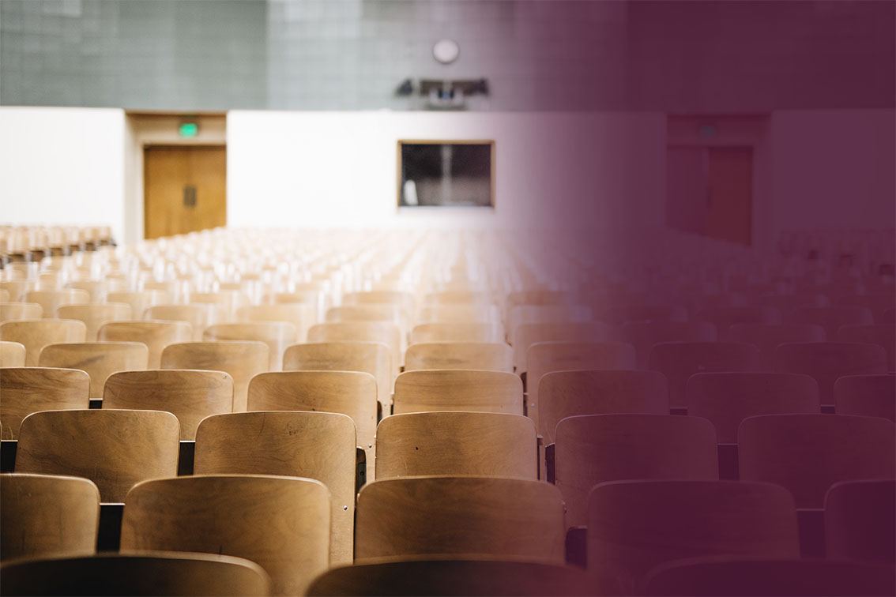

Headline Agency est une agence de communication, de design et de marketing fondé par Arthur et William. Ils travaillent souvent dans les bureaux de créative Factory, une association apportant une aide à des personnes venant de quartier populaire au niveau du travail, basée dans la région parisienne. L’entreprise accompagne les clients en proposent des contenus visuels sur tout type de support avec une stratégie marketing dans le but gagné de la notoriété. Le slogan d’headline est «Put your business à the headline», en français «mettez votre business en gros titre». Agence met tout en œuvre pour que le projet, le business du client fasse l’unanimité aux niveaux visuel et stratégique. L’entreprise avait comme projet de customiser dans sa globalité, une voiture télécommandée, à l’image de l’entreprise, dans le but de l’offrir au bié d’un concours. Sur Adobe Illustrator j’ai créé alors plusieurs feux avant et arrière pour le véhicule et des sortis d’aération, comme la calandre. Il fallait aussi prendre les lignes du prototype pour le mettre à plat pour pouvoir travailler dessus et proposer des motifs de peinture pour la carosserie, mais il lui faut un packaging. J’avais donc comme mission de le réaliser. Dans l’entreprise le travail d’équipe primé sur les autres valeurs j’ai alors aidé, sous la directive d’Élodie, à la réalisation de motif pour des t-shirts de sport, des vestes de sports, des brassiers pour les femmes, pour Decathlon.
L’imprimerie ADN (Ateliers Design Novateur), dans les grandes lignes, est une société d’impression grand format pour professionnel et particuliers. Ils peuvent proposer plusieurs services d’impression comme la signalétique*, le reprographie** et le libre-service. Il a étais crée par Denis COHEN, aujourd’hui en retraite il est néanmoins actif dans son entreprise. L’entreprise est bien équipée, possédant un massicot, une table de contre collage, une imprimante à UV, une machine à découpe et une imprimante grand format accompagné de toute sorte de papier comme l’adhésif ou du Arlon ils peuvent venir à bout de toutes les tâches. J'ai réalisé des visuels pour la clientèle en respectant le cahier des charges et en utilisant tous les ressources disponibles. Échenillage de plusieurs modèles de sticker et montage de roll-up (dis aussi «kakemono»). J’ai découvert de la prospection téléphonique, car il faut rester calme contre les incivilités de certains interlocuteurs.Utilisation de logiciels et machines de production, tous avec des méthodes différentes, de l’impression à la découpe.
Gestion et préparation de commandes pour livraison superviser par une responsable.
Observation des entretiens clients et suivit de la gestion des commandes.
L’espace Matisse est une association mais aussi une galerie d’art, proposer par la mairie de Creil, qui se situe au quartier du Moulin. L’espace collabore avec des artistes locaux en leur proposant des expositions, des activités avec les habitants du quartier. Cette structure donne aussi des cours à des personnes intéresser par le domaine de l’art, ils ont alors à leurs dispositions une dizaine de professeurs qui leur font découvrir photographie, la céramique, la sculpture, la peinture, la sérigraphie et l’art plastique avec du matériel adéquat comme des fours pour la céramique, des toiles, de la peinture, des pierres pour des sculptures, des postes informatiques avec des imprimantes spéciales destinées à la photo pour créer des oeuvres uniques. L’association n’hésite pas à mélanger les couleurs, les cultures que peut avoir la ville. Les personnes en situation d’handicape et de tout âge peut profiter de cette structure.
J’ai réalisé majoritairement de la mise en page. J’ai proposé un livret d’activité, un livret pédagogique. J’ai conçu aussi une maquette de newsletter et j’ai créé des fiches informations que l’espace Matisse pourrait mettre sur la devanture.On m’a demandé notamment de réaliser deux affiches dont une destinée à une exposition d’instruments et un "vernissage en musique" au conservatoire de Creil.
Diplome National d'Art
École Supérieure d'Art et Design d'Amiens - En cours
Baccalauréat Professionnel
Communication Visuelle Pluri-Média opt Art - mention
Lycée des métiers Amyot d'Inville - Senlis - 2021
Brevet d'Étude Professionnel
Communication Visuelle Pluri-Média - "Très Favorable"
Lycée des métiers Amyot d'Inville - Senlis - 2020
Brevet des collèges - mention
Collège Gaëtan Denain - Compiègne - 2018
École Supérieure d'Art et Design d'Amiens - En cours
Baccalauréat Professionnel
Communication Visuelle Pluri-Média opt Art - mention
Lycée des métiers Amyot d'Inville - Senlis - 2021
Brevet d'Étude Professionnel
Communication Visuelle Pluri-Média - "Très Favorable"
Lycée des métiers Amyot d'Inville - Senlis - 2020
Brevet des collèges - mention
Collège Gaëtan Denain - Compiègne - 2018